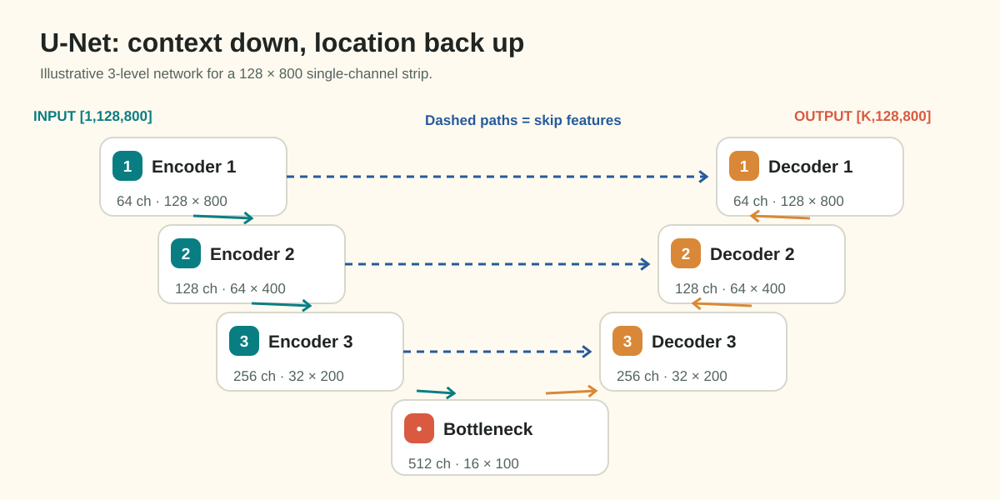

Baseline Segmentation with U-Net: Architecture, Heads, and Optimization
With a clean PyTorch Dataset, an isolated validation split, and an experiment tracker in place, you are ready to construct the central engine of your pipeline: the segmentation neural network and training loop.
For industrial surface anomaly detection, the U-Net architecture (introduced by Ronneberger et al. in 2015) remains the universal baseline. Its distinctive encoder-decoder structure and lateral skip connections allow it to extract high-level semantic defect abstractions while preserving the millimeter-precise spatial boundaries of hairline scratches and micro-cracks.
This guide breaks down the spatial mechanics of U-Net, explains how output heads and loss functions must strictly agree, walks through the complete batch optimization lifecycle, and demonstrates how to conduct a controlled, modest initial training run.
1. Motivation: Why U-Net Fits Industrial Strip Segmentation
In standard image classification, networks aggressively downsample images to collapse spatial information into a single categorical vector. But in anomaly segmentation, where the defect occurs is just as important as what the defect is.
Consider an industrial line-scan strip (\(128 \times 800\) pixels):
- A longitudinal hairline crack might be only 2 pixels wide but 150 pixels long.
- If an encoder downsamples the image by \(16\times\) (down to \(8 \times 50\) pixels), a 2-pixel wide crack vanishes from the feature maps.
- Without a mechanism to restore that lost spatial resolution, the network can detect that a crack exists, but it cannot output an accurate segmentation mask.
U-Net solves this dilemma through skip connections, which directly route high-resolution spatial feature maps from the contracting encoder across to the expanding decoder.
2. U-Net Architecture and Spatial Dimension Tracing
A standard U-Net comprises three main functional stages:

Figure 6.1: U-Net architecture and exact tensor dimensions for an industrial strip (\(128 \times 800\)). Skip connections preserve fine boundary detail from early encoder stages.Detailed Spatial Stage Breakdown:
- Encoder Level 1:
- Two \(3 \times 3\) convolutions: maps 1 input channel to 64 channels \(\to [B, 64, 128, 800]\).
- MaxPool2d (stride 2): downsamples height and width by half \(\to [B, 64, 64, 400]\).
- Encoder Level 2:
- Convolutions to 128 channels \(\to [B, 128, 64, 400]\).
- MaxPool2d (stride 2): \(\to [B, 128, 32, 200]\).
- Encoder Level 3:
- Convolutions to 256 channels \(\to [B, 256, 32, 200]\).
- MaxPool2d (stride 2): \(\to [B, 256, 16, 100]\).
- Bottleneck:
- Convolutions to 512 channels: \(\to [B, 512, 16, 100]\).
- Captures global spatial context along the entire strip at reduced resolution.
-
Decoder Level 3 (Expansion & Concatenation):
- Bilinear upsampling (\(2\times\)) or transposed convolution \(\to [B, 512, 32, 200]\).
-
Skip Connection: Concatenates features from Encoder Level 3 along channel axis:
\[\text{Channels} = 512_{\text{upsampled}} + 256_{\text{skip}} = 768 \to [B, 768, 32, 200]\] -
Convolutions reduce channels back to 256 \(\to [B, 256, 32, 200]\). 6. Decoder Level 2:
- Upsampling to \(64 \times 400\) + Skip from Encoder Level 2 \(\to [B, 128, 64, 400]\). 7. Decoder Level 1:
- Upsampling to \(128 \times 800\) + Skip from Encoder Level 1 \(\to [B, 64, 128, 800]\). 8. Output Head (\(1 \times 1\) Convolution):
- Maps 64 feature channels directly to \(K\) output channels \(\to [B, K, 128, 800]\).
Notice that because every downsampling and upsampling stage uses an integer power of two (\(2^3 = 8\)), both \(H=128\) and \(W=800\) divide cleanly without fractional pixel remainder (\(128/8 = 16\), \(800/8 = 100\)).
3. Output Heads and Loss Agreement
Your choice of output head, target format, and loss function must form a strictly consistent mathematical system. In segmentation, two standard configurations exist:
Configuration A: Multi-Label Setup (Independent Channels)
Output Head: 4 channels (raw unbounded logits Z)
Target Mask: [B, 4, 128, 800] float32 binary tensors {0.0, 1.0}
Activation: Sigmoid: P_k = σ(z_k) = 1 / (1 + e^(-z_k))
Loss Function: BCEWithLogitsLoss + Soft Dice Loss
Configuration B: Multi-Class Partition (Mutually Exclusive)
Output Head: 5 channels (Class 0: Background, Classes 1..4: Defects)
Target Mask: [B, 128, 800] int64 class indices {0, 1, 2, 3, 4}
Activation: Softmax across channels: P_k = e^(z_k) / Σ e^(z_j)
Loss Function: CrossEntropyLoss + Multiclass Dice LossThe Inconsistency Trap
Never mix configurations:
- FATAL ERROR: Using a 4-channel output head with
CrossEntropyLoss. (PyTorchCrossEntropyLossexpects mutually exclusive categorical labels, requiring a background channel!). - FATAL ERROR: Applying
torch.sigmoid()to logits before feeding them intonn.BCEWithLogitsLoss(). (BCEWithLogitsLossincorporates the sigmoid internally for numerical stability; passing sigmoided probabilities applies sigmoid twice, distorting gradients).
Do not claim that one configuration is universally superior. A 5-channel Softmax head enforces physical mutual exclusivity, but is only valid if your ground-truth masks are strictly disjoint. A 4-channel Sigmoid head allows flexible multi-label predictions, but requires an explicit strategy to handle overlapping channel predictions. Test both against your validation score.
4. The Compound Loss: Combining BCE and Soft Dice
In industrial surface segmentation, anomalies are small and sparse. If only \(3\%\) of pixels contain defects, a trivial model that predicts all zeros (all background) achieves \(97\%\) pixel accuracy!
Standard Binary Cross-Entropy (BCE) treats every pixel equally, allowing the vast background majority to dominate gradients. To solve this, pair BCE with Soft Dice Loss:
where typically \(\alpha = 0.5\) and \(\beta = 0.5\).
Differentiable Soft Dice Formulation:
For predicted probabilities \(\hat{P} \in [0, 1]\) and binary ground truth \(Y \in \{0, 1\}\):
where \(\epsilon = 1.0\) is a smooth factor that prevents division by zero when both prediction and ground truth are empty.
- When a defect is present, Dice Loss directly optimizes the overlap ratio (\(F_1\) score).
- When a defect is absent (\(Y = 0\)), the formula penalizes false alarms: \(\mathcal{L}_{\text{Dice}} = 1 - \frac{\epsilon}{\sum \hat{P}_i + \epsilon}\).
5. The Training Batch Lifecycle
Every training step in PyTorch follows an exact, disciplined sequence:
Forward Pass ────► Compute Loss ────► Zero Grads ────► Backward Pass ────► Optimizer Step
logits=M(x) L = crit(logits, y) opt.zero_grad() L.backward() opt.step()def train_one_epoch(model, loader, optimizer, criterion, device, scaler=None):
model.train()
running_loss = 0.0
for batch in loader:
images = batch["image"].to(device, non_blocking=True)
masks = batch["mask"].to(device, non_blocking=True)
# 1. Zero gradients from previous iteration
optimizer.zero_grad()
# 2. Forward pass (with optional mixed precision AMP)
if scaler is not None:
with torch.amp.autocast(device_type="cuda", dtype=torch.float16):
logits = model(images)
loss = criterion(logits, masks)
# 3. Scaled backward pass
scaler.scale(loss).backward()
scaler.step(optimizer)
scaler.update()
else:
logits = model(images)
loss = criterion(logits, masks)
loss.backward()
optimizer.step()
running_loss += loss.item() * images.size(0)
epoch_loss = running_loss / len(loader.dataset)
return epoch_loss6. Validation Cadence and Checkpoint Selection
At the end of each training epoch:
- Set the model to evaluation mode:
model.eval(). - Disable gradient tracking:
with torch.no_grad():. - Compute the mean Dice score and per-class Dice scores across your entire held-out validation set.
- Save the checkpoint only if the validation score improves:
if val_score > best_val_score:
best_val_score = val_score
torch.save({
"epoch": epoch,
"model_state_dict": model.state_dict(),
"optimizer_state_dict": optimizer.state_dict(),
"val_score": val_score,
"config": config,
}, "checkpoints/best_model.pt")
print(f"★ New best checkpoint saved at epoch {epoch}: Val Dice = {val_score:.4f}")7. A Modest First Run: The 5-Epoch Sanity Check
Before launching an expensive 30-epoch training job, always conduct a modest initial sanity run:
- Verify Loss Convergence: Train for 5 epochs. Verify that training loss steadily decreases (e.g., from \(0.85 \to 0.40\)). If loss does not decrease, your learning rate may be too high or your gradients may be zero.
- Inspect Qualitative Predictions: Inspect validation predictions after epoch 5. Are predicted masks beginning to localize defects, or are they completely blank?
- Verify Execution Throughput: Measure seconds elapsed per epoch. If 1 epoch takes 10 minutes on your machine, a 30-epoch run will take 5 hours. Optimize DataLoader workers before committing to long training runs.
8. Common Mistakes and Diagnostics
| Bug / Pitfall | Root Cause | Observable Symptom | Practical Diagnostic |
|---|---|---|---|
| Double Sigmoid | Applying sigmoid before BCEWithLogitsLoss. |
Gradients vanish; loss plateaus at exactly \(\approx 0.693\). | Ensure model outputs raw, unbounded logits. |
Forgetting model.eval() |
Running validation in training mode. | Validation scores fluctuate wildly due to batch norm updates. | Call model.eval() and model.train() explicitly. |
Missing zero_grad() |
Omitting optimizer.zero_grad(). |
Gradients accumulate across batches; loss explodes to NaN. |
Place optimizer.zero_grad() before loss.backward(). |
| Output Shape Mismatch | Final conv layer has wrong channel count (\(C=1\) instead of \(C=4\)). | RuntimeError: The size of tensor a (4) must match size of tensor b (1). |
Assert logits.shape == (B, 4, 128, 800). |
| Memory Leak in Validation | Appending tensors with computation history to a Python list. | VRAM consumption grows steadily every epoch until OOM. | Call .item() or .detach().cpu() when accumulating metrics. |
9. Decisions You Must Make
- Encoder Backbone Selection: Start with a lightweight, well-understood encoder (such as
resnet34orefficientnet-b0) fromsegmentation_models_pytorch. Avoid massive 100M-parameter models for your initial baseline. - Pretrained Weights: Initialize your encoder with ImageNet pretrained weights (
encoder_weights="imagenet"). Pretrained features converge much faster than training from random initialization. - Learning Rate & Optimizer: AdamW with an initial learning rate of \(1 \times 10^{-3}\) and a cosine annealing scheduler provides a reliable baseline across diverse vision tasks.
10. Try It: Run a Complete Forward/Backward Step on CPU
Verify the optimization lifecycle using this standalone snippet on a tiny synthetic batch:
import torch
import torch.nn as nn
import torch.optim as optim
# 1. Define minimal 1-block conv module
class TinyModel(nn.Module):
def __init__(self):
super().__init__()
self.conv = nn.Conv2d(1, 4, kernel_size=3, padding=1)
def forward(self, x):
return self.conv(x)
# 2. Instantiate on CPU
model = TinyModel()
optimizer = optim.AdamW(model.parameters(), lr=1e-3)
criterion = nn.BCEWithLogitsLoss()
# 3. Synthetic batch of 2 strips
images = torch.randn(2, 1, 128, 800)
targets = (torch.rand(2, 4, 128, 800) > 0.9).float()
# 4. Lifecycle step
optimizer.zero_grad()
logits = model(images)
loss = criterion(logits, targets)
loss.backward()
optimizer.step()
print(f"Forward Pass Output Shape: {tuple(logits.shape)}")
print(f"Backward Pass Loss Value: {loss.item():.4f}")
assert logits.shape == (2, 4, 128, 800), "Shape mismatch!"
assert loss.item() > 0, "Loss calculation invalid!"
print("✓ Forward, backward, and optimization step verified successfully!")For the complete standalone U-Net implementation with skip connections, inspect:
👉 docs/milestone_2_student_guide/examples/toy_unet_step.py
11. Authoritative Documentation & References
- Ronneberger et al. (2015): U-Net: Convolutional Networks for Biomedical Image Segmentation
- PyTorch
BCEWithLogitsLoss: PyTorch BCEWithLogitsLoss Documentation - Segmentation Models PyTorch (SMP): SMP Library Documentation